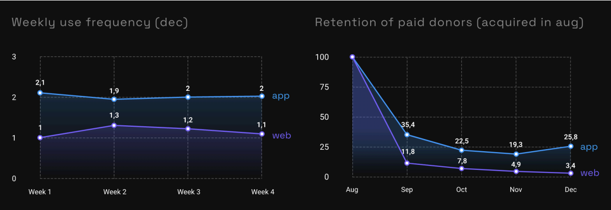
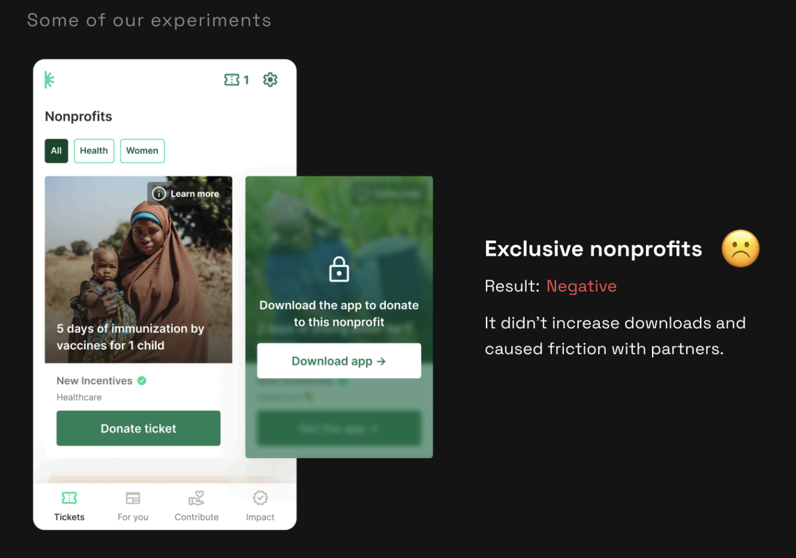
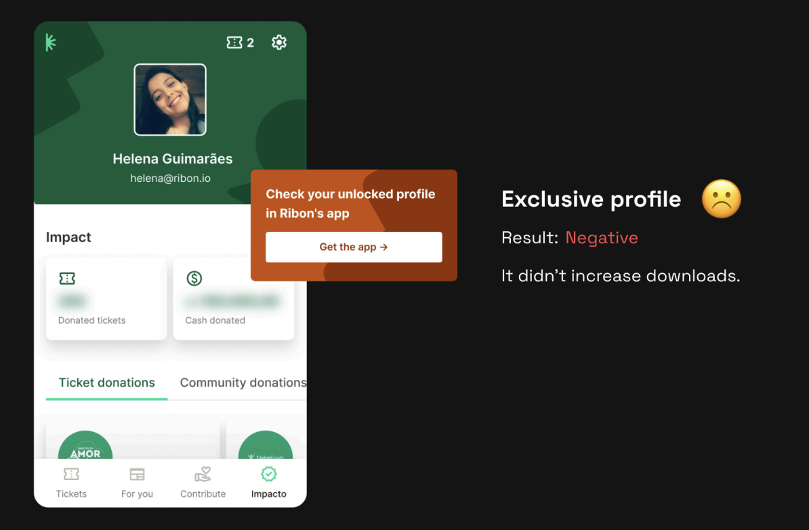
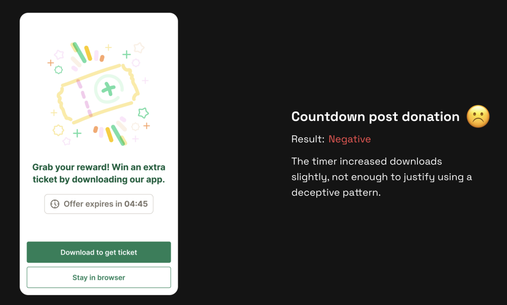
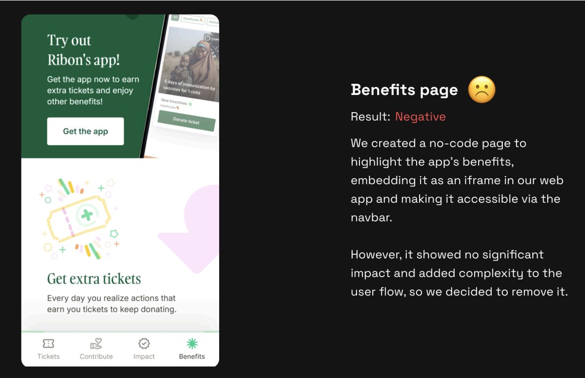
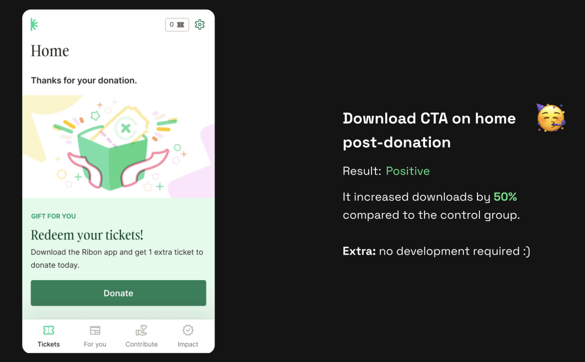
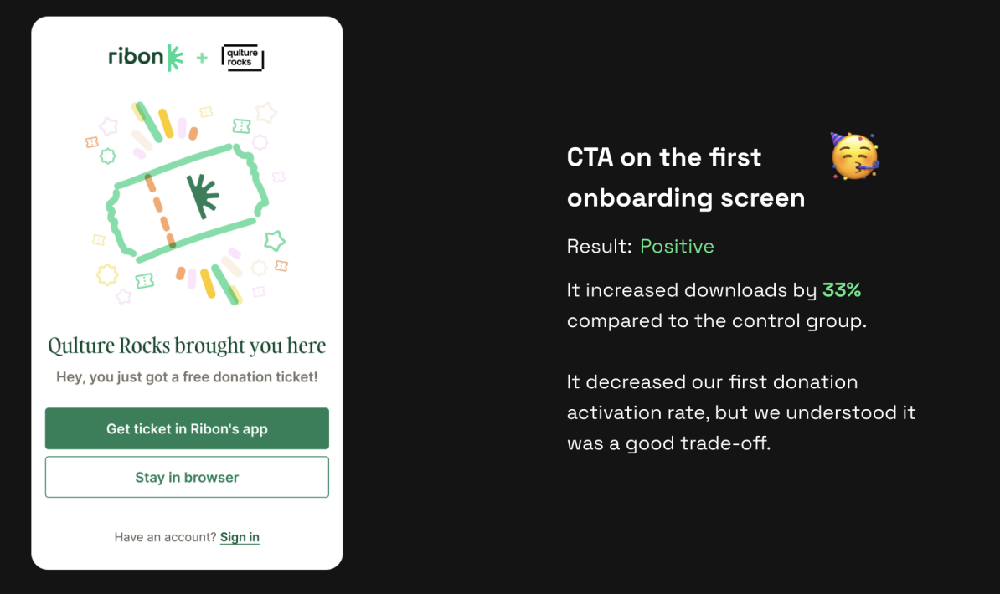
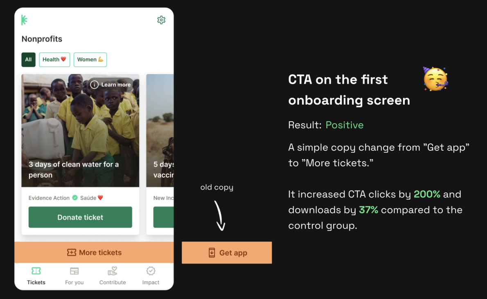
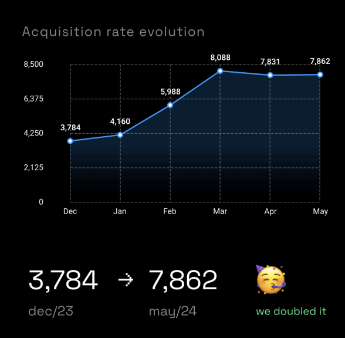

About Ribon
Ribon is a social impact startup that facilitates donations to nonprofits through an innovative and accessible model. Users donate to social causes at no cost to themselves, using "tickets" — a virtual currency earned by engaging with content.
Tickets are sponsored by philanthropists and companies committed to expanding collective social impact. Ribon generates revenue when users choose to donate with their own funds.
Main Objective
Increase the acquisition rate of native app users, who have proven to be significantly more engaged than web users.
Why it mattered
With a new funding round approaching, we needed metrics to prove Product-Market Fit. We had achieved a 1% conversion rate, but retention among paying users was low — a lack of "stickiness" to demonstrate PMF.
Product Growth
Manager
- 01Define and validate the strategic pivot from web-to-app.
- 02Structure the experimentation roadmap.
- 03Align stakeholders across growth, product, and marketing teams.
- 04Lead weekly A/B experiments via GrowthBook — testing variable groups against control groups.
- 05Track performance, resolve measurement bottlenecks, and share learnings across the organization.
A web-first flow
with a hidden cost
At Ribon, user acquisition relied on partnerships. Companies distributed donation tickets in exchange for user engagement — purchases, survey responses, and similar actions. Once attracted, users could continue on the platform at their own pace.
Our web flow had two competing objectives: converting users to paid donations, and encouraging native app downloads. Data revealed a critical insight — web users were significantly less engaged and tended to convert only once.
The decision was clear: focus the web flow exclusively on driving app downloads, concentrating all conversion efforts on the native app where retention and engagement were substantially higher.

Weekly A/B tests,
relentless iteration
With full focus on downloads, we ran experiments to turn Ribon Web into a download machine. The growth squad — myself as growth manager, a developer, and a product designer — conducted weekly A/B tests supported by a data engineer for precise tracking.
Starting point: 3,784 monthly downloads in December. Our hypotheses centered on four pillars: value framing, scarcity, feature exclusivity, and CTA clarity.

Exclusive Nonprofits
Locking certain nonprofits behind the app — users had to download to donate to their preferred cause.
It didn't increase downloads and caused friction with partner organizations.

Exclusive Profile
Promoting a richer profile visible only in the native app as an incentive to download.
It didn't increase downloads. The value proposition was not compelling enough.

Countdown Post-Donation
A countdown timer after donation: "Offer expires in 04:45 — Download to get an extra ticket."
The timer increased downloads slightly — not enough to justify using a deceptive pattern. Rejected on ethical grounds.

Benefits Page
A no-code page highlighting app benefits, embedded as an iframe in the web app and accessible via the navbar.
No significant impact. Added complexity to the user flow and was removed.

Download CTA on Home Post-Donation
Showing a download CTA on the home screen immediately after a user completes a donation — capturing high-intent moments.

CTA on the First Onboarding Screen
Placing a download CTA on the very first screen of the onboarding flow, before users even complete their first donation.

Copy Change:
"Get app" → "More tickets"
A single copy change on the onboarding CTA — reframing the download as a way to earn more tickets rather than a product install.
From 3,784
to 7,862 downloads

What the data
taught us
Users value donation tickets more than the donation itself. Understanding this core motivation was the key unlock. Small, insight-driven copy changes created outsized results — reframing "get app" as "more tickets" doubled click-through rates.
Don't reinvent the wheel. Many of our most effective hypotheses were inspired by established market best practices. Structured research into what works in comparable products accelerated our experimentation roadmap significantly.
Measurement is as hard as building. Tracking funnel stages was far more complex than anticipated. UTM tracking issues caused inaccuracies — we adopted backup strategies including unique app store links per test to ensure clean, reliable data.
Ethics shape product decisions. The countdown timer worked — but not well enough to justify a deceptive pattern. We rejected it. Growth tactics must align with brand values and user trust.
Explore more work
Back to Cases